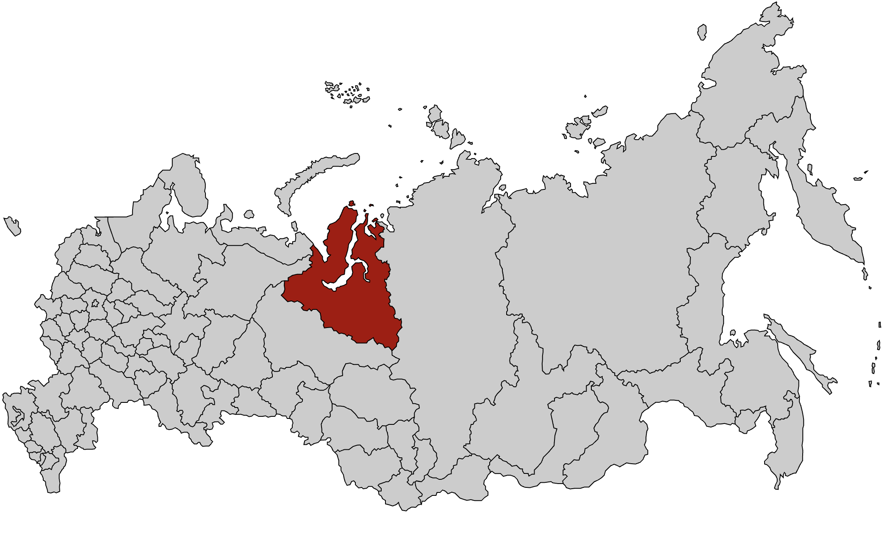
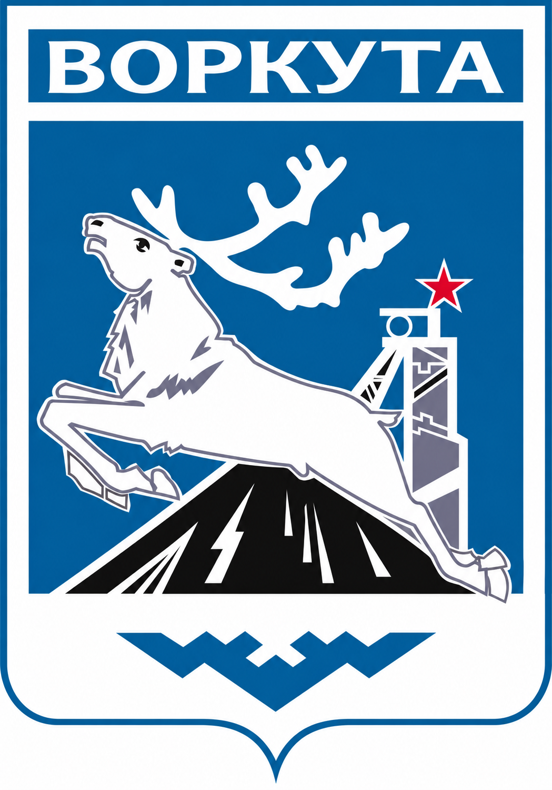

Сезон 2013 - Воркута
Место выезда

Нашивка

Командный состав
- Командир — Черногор Константин
- Комиссар — Бенюков Сергей
- Мастер — Чернобылов Василий
Бойцы
- Андреев Кирилл
- Глушаков Василий
- Зяблицев Александр
- Иванов Андрей
- Ившин Павел
- Левинский Кирилл
- Ледяев Сергей
- Мишустин Александр
- Пахарева Ольга
- Петров Михаил
- Рааб Иван
- Сиротин Александр
- Фёдоров Всеволод
- Четырко Владислав
О сезоне
Работодатель: ООО «Заполярпромгражданстрой».
Объект: Компрессорная станция «Ярынская-2».
Виды работ: укладка плитки, лопата.
На этом сезоне Монолит был в составе ВСС "Бованенково-Воркута".
Фотоальбом